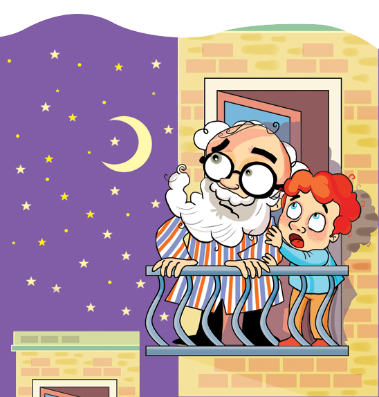

Bu kitap Sosyal Bilgiler dersi kazanımlarını desteklemektedir.
Damla Yayınevi | 1639
Dizi | Geçmişten Geleceğe Uygarlıklar Dizisi
Dizi No | 2
Genel Yayın Yönetmeni | H. Hüseyin Doğru
Çizen | Süleyman Özkonuk
Editör | Nazlı Hilal Kızılkaya
Birinci Baskı | Nisan 2012, İstanbul
T.C. Kültür Bakanlığı Sertifika No | 12582
ISBN | 978-605-383-437-3
E-ISBN |
DAMLA YAYINEVİ
Prof. K. İsmail Gürkan Cad. No: 8 Cağaloğlu / İstanbul
Telefon: (0212) 514 28 28 (pbx) Faks: (0212) 528 24 01
www.damlaegitim.com
YAYIN HAKLARI
Bu kitabın yayın hakları anlaşmalı olarak Damla Yayınevi’ne aittir.
MAYA UYGARLIĞ ININ SIRRI
Bizler, yani yirmi birinci yüzyılın insanları, kendimizi medeniyetin doruğuna ulaşmış olarak görmenin bencilliği ile geçmişe ihanet mi ediyoruz ne! İnsanoğlunun mağaralarda yaşayıp ateşi bulduktan sonra aşama aşama ilerleme kaydettiğini kabul etsek bile, bilmediğimiz tarihlerde medeniyet birkaç kere zirveye ulaşmış da tufanlarla toprağa mı gömülmüş? İnsanoğlu her dibe vuruşundan sonra medeniyeti yeniden mi tesis etmiş? Yoksa hep söyleyegeldiğimiz gibi ilk insanlardan bu yana hayatın merdivenlerini ağır ağır çıkarak neticede on dokuzuncu yüzyılda mı şahlanmış? Eğer böyle olduğunu kabul edersek nasıl ve hangi şartlarda yapıldığını hâlâ çözemediğimiz birçok kalıntıyı yok saymış olmaz mıyız?
Size yukarıda birkaç örneğini yazdığım bu sorular Prof. Akif Yurttançıkmaz’ın kafasında dönüp duruyor; oradan benim genç beynime geçiyor ve nihayet Orhan ağabeyi uykusuz bırakıyordu. İnsanoğlunun geçmişinin sandığımızdan da karmaşık ve incelemeye değer olduğunu düşünüyorduk. Biz ki geçmişle gelecek arasında mekik dokuyan çılgın seyyahlarız… Belki çok şeye ışık tuttuk, çok şey görüp öğrendik, inkâr etmiyorum ama yaşlı gezegenimizin birkaç kere atlattığı badireleri hep göz ardı ettik. Mesela bir zamanlar Ege Denizi diye bir deniz yokmuş ve yaşlı Asya kıtası Avrupa ile birleşikmiş. Atlas Okyanusu’nun ortasında kurulan Atlantis ülkesi nerede şimdi? Hangi tufanla yok olup gitti? O güzeller güzeli ada ülkesi sulara gömülürken dünyanın diğer bölgeleri bu tufandan hiç mi etkilenmediler?
Zaman makinemizle yaptığımız yolculuklar bizi gittikçe bu soruların içine çekiyordu. Elimizde böyle harika bir araç varken herhangi bir zaman diliminde toprağa gömülmüş medeniyetleri görmeliydik. Bu, bizim insanlığa karşı en büyük vazifemizdi. Ama nereye ve hangi zaman dilimine gidecektik? İşte asıl mesele buydu.
Dedemin günlerdir gözüne uyku girmemesinin sebebi, hangi uygarlığın izini süreceğimize karar verememekten kaynaklanıyordu; benim ise bir tufanın yeryüzünden sildiği bir yere gitmekten ötürü korkularım vardı. Kimseye belli etmiyordum; ama dedemin böyle bir yolculuğa çıkmaktan vazgeçmesi için dua ediyordum. Yanlış duymadınız, ben, zaman makinesinin gedikli süvarisi, tarih öncesi çağlara gitmekten korkuyordum. Bunları yazarken utanıyorum ama gerçeği de saklayamam.
Sonunda dedem kararını verdi. Mısır piramitlerine olan hayranlığından yola çıkarak piramitlerin birer benzerinin olduğu Orta Amerika’ya gitmek istediğini bildirdi.
— Nasıl yani? dedim. Orta Amerika’da da mı piramit varmış?
Cahilliğimi yüzüme vurur gibi gözlüklerinin üzerinden dik dik baktı bana:
— Maya uygarlığı diye bir şey duymadın mı evlat?
— Maya mı? Nerede?
— Yahu sahiden duymamışsın!..
Acaba çok bilinen bir şeydi de ben mi atlamıştım? Herkesin bilgi dağarcığında olan bir uygarlığı neden bilmiyordum? Hafızamı ne kadar yokladıysam da Maya uygarlığına dair bir şey hatırlamadım. İlkokul çocuğu gibi dedemin karşısında apışıp kaldım. Bön bön bakarak omuzlarımı çektim:
— Hiç duymadım… dedim.
— Pekâlâ, sen bizden daha meraklı gözlerle inceleyeceksin demektir bu, hele bir gidelim de…
— Nerede bu devlet? Kim yönetiyor?
— Şu anda mı?
— Evet.
Dedem başını salladı. Cahilliğimle eğleneceğini sandım. Ama dedem durgunlaşmıştı.
— Ne yazık ki ne böyle bir devlet, ne de bu devleti yönetenler var. Tarih sahnesinden silineli asırlar geçmiş.
Yavaş yavaş anlamaya başlıyordum. Düpedüz bu yok olmuş uygarlığın parlak günlerini görmeye gidecektik.
— Hakkında neler biliyoruz? diye sordum.
Bir kere olan olmuştu. Mayalar hakkında cahiloğlu cahildim. Dedemin kızacağına aldırmadan aklıma ilk gelen soruyu sormakta bir sakınca görmüyordum artık.
— Pek bir şey bilmiyoruz, dedi. Bildiğimiz şu ki, Mısır piramitlerinin benzeri gibi birçok eser bırakmış olmaları.
Derin bir nefes aldım. Mayalar konusunda cahil olmam o kadar da utanılacak bir şey değilmiş. Dedem de az şey biliyormuş. Sonra salim kafa ile düşününce her şeyi bilmem gerekmediğine hükmettim. Sanırım bu uygarlık, dedemin günlerdir kafa yorduğu jeolojik dönemlerin birinde yok olanlardan… Eğer öyle olmasaydı, hafızamın bir yerlerinde onlara dair ufak tefek bilgi kırıntıları kalmış olurdu.
Neyse, hiç olmazsa hangi uygarlığı inceleyeceğimiz konusu aydınlığa kavuşmuştu. Hangi zamana gideceğimize ise dedem karar verecekti. Sonradan anlaşıldı ki birinci kaptanımız Orhan ağabey de Mayalar hakkında bir şey bilmiyormuş.
Yolculuk hazırlıklarımız sürerken dedem Maya uygarlığı hakkında yeni yeni tezler ortaya atıyor, zaten karışık olan kafamı iyice allak bullak ediyordu:
— Acaba, diyordu, Mısırlılar mı Mayalardan etkilendi, Mayalar mı Mısırlılardan?
Sonra kalemini Orta Amerika’nın üzerinden kaldırıp Mısır’a doğru bir çizgi çiziyordu:
— Ne dersin Yavuz? O devirde Atlas Okyanusu’nu geçecek gemilere sahip miydiler?
— Sahip olduklarını varsaysak bile pusulaları var mıydı?
Dedem, nihayet aklı başında bir soru ile karşılaşmıştı. Başını haritadan kaldırıp takdir dolu bakışlarla süzdü beni.
— Pusulaları yoksa okyanusu geçmeleri imkânsız, diye devam ettim.
— Öyleyse başka bir şey olmalı…
Gözlerini kısarak haritanın üzerine eğildi. Kalemini Atlas Okyanusu’nun üzerinde ileri geri hareket ettirerek düşüncelere daldı.
Ses çıkarmadan bekliyordum. Bakışlarım kalemle haritanın mavi yüzeyi arasında gidip geliyordu. Birden dedemin eline yapıştım. O anda kalem okyanusun üzerinde düzensiz bir yay çizdi.
— Mısırlılar ile Mayalar arasında doğal bir köprü vardı! diye haykırdım.
— Nasıl bir köprü?
— Atlantis! Medeniyet hangi topraklarda doruğa yükselirse yükselsin Atlantis üzerinden devletlere aktarılıyordu.
— Olabilir, dedi dedem. Bir bilim adamından beklenen soğukkanlılıkla tekrar haritanın üzerine eğildi. Oysa benim kadar heyecanlanmasını bekliyordum.
Dedem hep böyledir. Onun hayatında taşkınlıklara, heyecanlara yer yoktur. Sormadan, sorgulamadan hiçbir şeye inanmaz ve kendini kaptırmaz. Hâlbuki ben beynimde çakan şimşekle heyecanlanmıştım.
Ne olursa olsun dedemin kafasına yeni düşünceler sok-muştum. Ertuğrul geçmişe doğru havalanmadan önce Prof. Akif Yurttançıkmaz, nereye ve niçin gideceğine daha emin bir şekilde karar vermiş olacaktı.
Ve Rotamız Belli Oldu
Zifiri karanlık bir gecede zaman makinemiz yüksek bir yere yumuşak bir iniş gerçekleştirdi. Ertuğrul’un koordinatları tam istediğimiz yeri gösteriyordu. Orta Amerika! Buraya tarih öncesi devirlerde kalan Maya uygarlığını görmek için gelmiştik.
Gecenin karanlığını fırsat bilerek uykuya çekildik. Yorgunduk ve bizi burada neyin beklediğini bilmiyorduk. Bedenlerimizin güç toplamasına izin vermeliydik.
Ertesi gün güneş, sanki bizi uyandırmak ister gibi ilk ışıklarını Ertuğrul’un camından içeri yolladı. Böylece yönümüzün doğuya doğru olduğunu anlamış olduk. İlk işimiz dışarı çıkıp nerede olduğumuzu anlamaya çalışmak oldu. Orhan ağabey, Ertuğrul’un indiği sınırlı düzlüğe bir göz attıktan sonra:
— Doğal bir tepenin üzerinde olmadığımıza adım gibi eminim, dedi.
Gerçekten de bir odanın içi kadar düz ve pürüzsüz bir yerdeydik. Karşımızda derin vadilerle birbirinden ayrılan dağlar yükseliyordu. Tekdüze bir yeşillik, mahmurluğunu henüz atamamış gözlerimizi okşuyor, tepelerin üzerindeki sisler gizemli bir ülkeye geldiğimizi fısıldıyordu.
İlk incelemelerden sonra Orhan ağabeyin haklılığı ortaya çıktı. Doğuya, batıya, güneye ve kuzeye doğru muntazam yüzeyleri olan harikulade bir piramidin kesik başına konmuştuk. Kendimizi göklerden gelen kartallara benzettik o an... Karşımızda, arkamızda, sağımızda ve solumuzda yükselen yalçın kayalara inat, hangi ustanın elinden çıktığını bilmediğimiz şahane bir yapıya destursuz inivermiştik! Aşağıya her yöne doğru inen ve giderek genişleyen merdivenleri kullanarak inebilirdik. Ama önce bu harika manzaranın tadını çıkarmalıydık. İnsan sırf bu manzarayı seyretmek için bile büyük bir eziyete katlanır ve böylesi muhteşem bir yapı yapar…
Denizden gelen iyot kokusu ve nem, hafif esen yel ile birlikte bize geçmiş zamanların tılsımlı hikâyelerini anlatı-yordu. Büyülenmiştik. Niçin geldiğimizi, amacımızı, nerede olduğumuzu unutmuştuk. Fakat bir an evvel toparlanıp inmeliydik. Bu görkemli yapının sahipsiz olmadığı ortadaydı.
Basamakları sayarak indim. Tamı tamına doksan bir basamak vardı. Meğer Orhan ağabey de saymış içinden:
— Öteki basamakları da sayacağım, diyerek piramidin etrafını dolaştı.
Tahmin ettiğimiz gibi diğer merdivenlerde de doksan bir basamak vardı. Dedem uykuda konuşur gibi:
— Bunun bir anlamı olmalı, diye mırıldandı.
Orta Amerika’nın bugünkü Meksika topraklarındaydık ve eski bir uygarlığın izlerini sürüyorduk. Piramit akıllara durgunluk verecek bir şekilde görkemliydi. Ondan uzaklaşarak bakış açımı genişlettim. Birden gördüğüm bir şeyle ağzım açık kaldı. Merdivenin yerle birleştiği noktada duran bir yılan başı, piramidin çıkıntılarının gölgesi ile “S” biçiminde kıvrılmıştı. Diğer uçtaki baş ile birlikte de çift başlı bir yılan hâlini almıştı. Bu bir göz yanılsaması mıydı acaba? Gözümü çift başlı yılandan ayırmayarak dedemi kolundan çektim, geri geri götürdüm:
— Şuraya bakar mısınız dedeciğim?
— Nereye?
— Yılan figürüne… Gölgelerden oluşan gövdesine!
Dedem, hazine bulmuş bir define arayıcısı gibi zıpladı:
— Şimdiye kadar gördüğüm en muhteşem görüntü!
Orhan ağabey de fotoğraf çekmeyi bırakarak bu iki taş figürün bir ışık olayı ile kıvrılan bir yılana benzeyişini izlemeye başladı.
— Bu, tesadüf olamayacak kadar güzel bir görüntü, dedi dedem.
Gerçekten de karşımızda tıslayarak sürünmeye hazır iki başlı bir ejderha duruyordu. Masallardan çıkıp, adının dibindeki bir tabletten öğrendiğimiz Kukulkan Piramidi’nin dibine çöreklenmiş gibiydi.
Maya uygarlığının topraklarına inişimizin üzerinden altı saat geçmişti. Çevrede ne bir insan ne bir canlı göze çarpıyordu. Sisler içinde rüyaya dalmış bir memlekette bizi içine çeken bir şeyler vardı. Sandığımızdan daha çok şey bulacağımızı seziyordum. Bugün ülkede olağanüstü bir şeyler mi vardı acaba? Çünkü bu sessizlik hayra alamet değildi.
Milattan önceki yılların bakir topraklarında yürüyorduk. Yanılmadığımızı -adını daha sonra öğrendiğimiz- Palangue şehrine vardığımızda anladık. Kentin en güzel tepesine oturtulmuş Yazıt Tapınağı’nın önü ana baba günüydü. Ağlaşanlar, haykıranlar, başını taştan taşa çalanlar... Mahşer yeri gibiydi her yer. Neler oluyordu? Bu insanlar niçin toplanmışlardı? İnce liflerden örülmüş kumaşları vücutlarına dolayan bu insanları kahreden neydi? Dil bilmiyorduk. Geçmiş zaman insanlarıyla iletişim kurmak o kadar da kolay değildi. İzleyip anlamaktan başka çaremiz yoktu.
Çok geçmeden anladık ki Mayalar, onlara yol gösteren, gelecekten haber veren, medeniyetin ilerlemesinde en büyük paya sahip olan çok değerli bir adamını yitirmiş. Bütün bu tantana, kulakları tırmalayan uğultu, ağlamalar, haykırmalar bu adam içinmiş.
Bir kenarda öylece duruyorduk, ama ayaklarımıza kara sular inmişti. Sonunda güneşin batması ile insanlar tapınağı boşalttılar ve meydanı gelecekten gelip sırlarının peşine düşen biz zaman labirentinin çılgın gezginlerine bıraktılar. Bana kalsa burayı herkesten önce terk ederdim. Ama dedem, Maya uygarlığının ipuçlarını bu taze mezarda bulacağını umuyordu. Tarih öncesi çağlarda insanlar ölülerini değerli eşyaları ile birlikte gömerlerdi. Buradan yola çıkarak Mayalı bu adamın mezarında bir şeyler bulacaktı. Benim midem pek kaldırmadığı için oradan uzaklaştım. Taze bir mezarın açılmasını asla seyredemezdim.
Neyse ki korktuğum gibi olmadı. Dedem, adamın mezar taşının üzerinde, ortasında güneş figürü bulunan ve her bir parçasında başka bir figürün resmedildiği yuvarlak bir kapak bulmuştu. Şekilleri, resimleri anlamlandırmak pek kolay değildi. Zaten bizler de kolay işlerin adamı değildik. Karşımızda bin bir bilmeceyi içinde barındıran ne olduğu belirsiz bir kapak vardı. Mayaların sırrı dedeme göre bu kapakta gizliydi. Onu çözersek bu uygarlık hakkında her şeyi öğrenecektik. Fakat ben dedem kadar iyimser değildim. Ya sıradan bir kapaksa? Ya bu mezarın içinde yatan, bir ressam ya da büyücü ise? Niçin ufacık bir kapağa ya da tablete bu kadar anlam yüklüyorduk? Dedem, şu anda bir şifre çözücü durumundaydı. Kapağı delip geçecek gibi dikkatli bakıyordu.
Biz mezarla uğraşırken vakit gece yarısını çoktan geçmişti. Zifiri karanlıkta kırk düğümü çözmeye çalışan bir kader mahkûmuna benzetiyordum hâlimizi. Dedem hiç konuşmuyordu. Şafak sökerken kapaktaki resimlerin hemen hemen hepsini bir kâğıda simetrik bir şekilde çizmişti. Resimlere her açıdan bakıyor, ne anlama geldiklerini, hangi sırrı sakladıklarını bulmaya çalışıyordu.
Ortalık yavaş yavaş ağarıyordu. Göz kapaklarıma hâkim olmakta güçlük çektiğim bir anda dedem haykırdı:
— Olamaz!
Orhan ağabeye baktım o an. Yüzü kireç gibiydi. Yerinden uğramış gözlerle bir dedeme, bir kapağa bakıyordu. Gördükleri neydi? Hangi şifreyi çözmüş, hangi sırrı ortaya çıkarmışlardı? Uykum dağılıverdi ve faltaşı gibi açılmış gözlerimi resme diktim. Dedemin yaptığı şeritler bir araya gelince ortaya bir jaguar, jaguarın üstünde de bir yarasa beliriyordu.
Dedem, Mayaların ilk sırrını çözmüştü:
— Başlangıç nasılsa, son da öyle olacaktır!
Sesi yerin altından geliyor gibiydi. Belki de tapınak yankılanıyordu. Tam anlamamıştım ama başlamaktan ve sondan bahsedildiğine göre bizi ilgilendiren zamanlar söz konusu olabilirdi. Peki ama onları korkutan neydi? Soran gözlerimi dedeme diktim. Konuşmasa çıldırabilirdim. Sebebini bilmediğim bir korku kaplamıştı içimi.
— Her çağı gösteren bir hayvan vardır Maya takviminde evlat, diye söze başladı dedem. Jaguar da bizim çağımızı gösteriyor. Yarasa ise ölümü simgeler.
Parçaları yavaş yavaş birleştirdim. 21. yüzyıl ve ölüm! Bu ne demekti? Biz şu anda milattan önce 2000’li yıllarda değil miydik? Tarih sahnesinden silinmiş bir uygarlığın bizim zamanımıza dair bir kehanette bulunması ne kadar gerçek olabilirdi ki?
— Güldürmeyin beni, dedim. Alt tarafı bir resim? Vehme1 kapılmanızı anlayamıyorum.
Orhan ağabey başını ümitsizce salladı:
— Keşke vehim olsa!.. Şu tarihe bakar mısınız?
Ben inanmadığım için bakma zahmetine katlanmadım. Dedem, Orhan ağabeyin gösterdiği şeridi incelemeye koyuldu ve çok geçmeden asabi dudaklarından şu cümleler döküldü:
— 22 Aralık 2012!
Daha neler!.. İki yıl… Topu topu iki yıl sonra bir felaket mi olacak? Mayalar veya onların kendini bilmez bir büyücüsü öyle dedi diye oturup ağlayacak mıyız? İyi de dedeme ne oluyor? Onun gibi zamana hükmetmiş bir bilim adamı, bu safsataya inanıyor mu? Birden ilk söylediği sözü hatırladım: “Başlangıç nasılsa son da öyle olacaktır.” Peki başlangıç neydi? Bu soruyu yüksek sesle söylemişim. Dedem karşılık verdi:
— MÖ. 12 Ağustos 3114 yılını başlangıç olarak kabul etmiş Mayalar. Buna göre dünya dört zaman aşımına uğramış. Beşinci zamanın tufanı ise 22 Aralık 2012 yılında olacakmış. Elbette bütün bunlar onların düşünceleri. Ne var ki diğer dört zaman, harfi harfine meydana geldi. Kabul edelim ki Mayalar astronomi ilminde bizden çok ilerdeymişler.
— Yapmayınız dedeciğim. Nereden çıkarıyorsunuz?
— Kukulkan Piramidi’nin basamaklarını hatırladın mı?
— ?!
— Dört ile çarp bakalım. Her yöne doksan bir basamak yapılmıştı, hatırla…
Çarptım. 364 sayısına ulaştım. Hâlâ bir şey anlamamıştım. Soran gözlerle:
— 364, dedim.
— En tepedeki düzlüğü ekle.
— 365!
Bir an donakaldım. Elde ettiğim sayı bir yıla eşitti. Mayalar, ta o devirlerde de bir yılın günlerini bu kadar kusursuz nasıl hesaplayabilmişlerdi? Ya dedemin çözdüğü şifre de gerçek ise? Kanımın damarlarından çekildiğini hissettim bir an. Bayılmamak için bin bir çeşit resimle bezenmiş bir dikilitaşa dayandım.
Orhan ağabey, ilk heyecanını atlatmış, yakın gelecekte uzayda olabilecek hareketleri düşünmeye başlamıştı. Aklına bir şey gelmiş gibi çöktüğü taşın üzerinden fırladı.
— Buldum! diye haykırdı.
— Neyi?! diye sordum merakla.
Gözlerimi ona dikmiş, hiç konuşmadan bekliyordum.
— Nibiru! Tabii ya! Nibiru 2012 yılında Dünya’ya yaklaşacak.
— Nibiru da neyin nesi? diye omzumu çektim. Kafam allak bullak olmuştu. Bugün herkes bilmece gibi konuşuyordu ve sabrım taşmak üzereydi.
— Gaz bulutu… Sümerler ona Nibiru adını takmışlardı. 10. gezegen de diyebiliriz. 3661 yıllık periyotla Dünya’nın yakınından geçer. Her geçişinde de felaketlere yol açar.
— Saçma! Bu hesaba göre Dünya’ya milattan önce çarpmış olmalı. Yaşattığını varsaydığınız felaketleri kim görmüş?
— Mayalar! dedi dedem.
Sonra devam etti:
— Mayalar her tufandan sonra insanlığın yükselişe geçtiğine inanıyorlardı. Bu yüzden 22 Aralık 2012’yi de biz, dibe batıştan sonra bir yükseliş olarak düşünebiliriz.
— Bizim geleceğimizi bileceklerine kendi gelecekleri ile ilgilenebilselermiş.
— Onu da biliyorlarmış evlat! Milattan sonra 900 yılında yeryüzünden çekileceklerini adları gibi biliyorlarmış.
— Falcılar fazla mesai mi yapıyormuş?
— Dalga geçme Yavuz! Köklü bir uygarlığın ince hesap-larından bahsediyoruz. 900 yılında büyük bir kuraklık olmuş ve Mayalar açlıktan kırılarak yok olmuşlar.
— Bu kadar tapınak, piramit, mamur şehirler bırakan bir uygarlık, kıtlık yılları için neden tedbirli olamamış?
— Uzun süren bir kuraklık ve hastalıklar hazır olan gıdayı da eritir. Hazıra dağlar dayanmaz evlat…
Sabahın ilk ışıkları gözlerimizi kamaştırırken biz zaman labirentinin gezginleri, binlerce yıl ötesinden günümüze dair bir sırra ulaşmanın hem heyecanını hem de -doğruysa- üzüntüsünü yaşıyorduk. Eski şifreleri çözmekle, eski uygarlıkların mahremiyetine girmekle acaba yanlış mı yapıyorduk? Üçümüzün de kafası allak bullaktı.
Orhan ağabey, dedemin amatörce çizdiği simetri resimlerini çantasına koyduktan sonra yola çıktık. Yucatan tepelerine geldiğimizde, Mayaların ne kadar ileri bir medeniyet olduklarını bir kez daha anladık. Mayalar üzerleri kitabelerle dolu dikili taşlar inşa etmişlerdi. Kendileri de iri kıyım, güçlü kuvvetli insanlardı. Biz onların yanında pek zavallı ve zayıf kalıyorduk.
Nereye gidersek gidelim, aklım Nibiru toz bulutunda kalmıştı. Mayalar, yani şu insanlar astronomiyi bizden önce mi geliştirmişler? 21. yüzyılın kibirli bir genci olarak buna inanmak istemiyordum. Ama her gittiğimiz yerde gördüğüm ileri medeniyet, bırakılan eserler, dikili taşlardaki birbirini tamamlayan ve mutlaka birçok şifreyi barındıran resimler buna inanmamı haykırıyordu. Limana yanaşan ve Mısır’dan geldiğini sonradan anladığımız ahşap gemiler, başlangıçta bizi bu sefere çıkaran sebepleri açıklamaya yetiyordu. Hiç şüphesiz Mayalar, Atlantisliler ve Mısırlılar, ileri bir teknoloji ile birbirleri arasında işbirliği kurmuşlardı.
Rüya âleminde dolaşır gibiydik. Atlas Okyanusu’nu aşabilen, ta yirmi birinci yüzyıl hakkında kehanetlerde bulunan bir uygarlığı yakından gören insanlar olarak şanslı mıydık? Yoksa öğrendiklerimizi içimizde saklayarak günün birinde bu sırrın altında ezilip kalacak mıydık? 22 Aralık 2012 yılı o kadar yakındı ki! Bütün bunların bir saçmalıktan ibaret olmasını diliyordum içimden.
Ertuğrul’un, tepesine konduğu Kukulkan Piramidi’nin yanına geldiğimizde güneş henüz doğmamıştı. On günlük bir gezinin yorgunluğu ile 91 basamağı tırmanmak gözümüzde büyüyordu. Biraz dinlenmek için bahane ararken aklıma harika bir fikir geldi:
— İki yılan başının gölgelerle bir yılana dönüşmesini yeniden görmek istemez misiniz? dedim.
İkisi de bu fikrime bayıldı. Piramidin ilk basamağına oturduk. Karşı tepeler sisler içinde tüllenirken, güneş ilk ziyalarını gönderdi. Tatlı bir esinti yüzümüzü okşadı. Yaprakların, otların üzerinde yoğunlaşan su buharları kristal şebnemlere dönüştü. İçinde bin bir sırrı barındıran bu gizemli ülke, bir ışık seli ile tepeden tırnağa yıkandı.
Güneş ufukta yükselirken, taş yontusu olan yılan kafalarına vücut verecek gölgeleri izlemek için yerimizden kalktık. Hayret, bu kez gölgeler her yana dağılıyor, hiçbiri yılan kafasının gerisinde kıvrım oluşturmuyordu. Kuşluk vaktine kadar beklediğimiz hâlde iki taş kafayı bir vücutta birleştirecek gölgeyi göremedik. Oysa on gün evvel basamak çıkıntılarının gölgeleri iki taş kafayı bir vücutta toplamış, sürünmeye hazır bir yılan hâline getirivermişti. Şimdi neden aynı görüntüyü yakalayamıyorduk?
Dedem boşa zaman geçirmiş olmaktan muzdarip bir hayıflanma ile:
— Nasıl da düşünemedik? Buraya ilk geldiğimizde tarih 21 Mart’ı gösteriyordu. Yani ekinoksu2... Dünya’nın hareketlerini santim santim hesap eden bir medeniyet, elbette ki ekinoks gününü de biliyordu.
— Yani? diye aptalca bir soru sorma gafletinde bulundum yine.
— Yani, sizin anlayacağınız, yılda iki kere yılan başları bir vücutta birleşiyorlar: 21 Mart ve 23 Eylül! Boşu boşuna beklemeyelim!
Artık şüphem kalmamıştı. Mayalar tarih öncesinde yaşamış önemli bir uygarlıktı. Hatıraları önünde şapka çıkarmaktan başka ne yapabilirdik ki? Dileyelim de hayatlarında bir kere yanılmış olsunlar. Şu 22 Aralık 2012 yılı kehanetleri –yok yok kehanet demeyelim, bulguları- gerçekleşmesin.

KANİJE ÖNÜNDE
Ertuğrul’a binip de zamanın derinliklerinde yolculuk yapmayalı aylar olmuştu. Dedemin fakültedeki bilimsel çalışmaları, benim derslerimin ağırlığı ister istemez bizi bir yolculuğa çıkmaktan alıkoyuyordu. Bu yüzden dün akşam dedem ani bir kararla ertesi sabah için bir yolculuk planladığını söyleyince çok şaşırmıştım. İki günlük hafta sonu tatilimiz vardı ve dedem bu iki günü kısa da olsa bir yolculukla değerlendirmek istiyordu.
Gece boyu hazırlık yapıp, ertesi sabah yola çıktık. Orhan ağabey daha gün doğmadan gelmişti. Ertuğrul’dan uzun süredir ayrı kalmak ona da zor gelmişti açıkçası. Bu yüzden heyecanlıydı.
Dedem zaman makinesinin takvim ayarını “815” yılına getirdi. Niyeti on iki yüzyıl öncesine gidip, Bağdat’taki bilimsel araştırma merkezi “Dâru’l-Hikme”yi görmekti. Uzun zamandır bir yolculuğa çıkmadığımız için dedemin bu isteğine ses çıkarmamıştık biz de. İşin aslı bilimin altın çağına gidip, o dönemde yapılan çalışmaları yerinde görmek fena bir fikir değildi hani.
Ancak işler istediğimiz gibi yolunda gitmedi. Ertuğrul havalandıktan kısa bir süre arızalandı. Koordinatları gösteren ekranın üzerinde kalın lacivert bir çizgi oluşmuştu. Bu yüzden yere acil iniş yapmak zorunda kaldık.
Gemiden indiğimiz zaman dizimize kadar kara battık. Hava soğuktu. Ayaz nefesimizi donduruyordu. Yürümekten çok, kar içinde yuvarlanarak yokuş aşağı indik. Nerede olduğumuzu, hangi zaman dilimine geldiğimizi bilmiyorduk.
Orhan ağabey:
— Bu hayra alamet değil, bilmediğimiz bir yerde kalakaldık, dedi.
Dedem:
— Arızayı gidermeden önce nerede olduğumuzu anlamaya çalışalım. Sonra döner, neler yapabileceğimize bakarız, diye karşılık verdi.
Geriye nasıl döneceğimiz umrumda bile değildi. O anda soğuktan titriyor, sadece ısınmak için sığınacağımız bir yere gitmek istiyordum.
Ayaklarımıza dolan kar, parmaklarımızı donduruyordu. Durursak donacağımızı biliyorduk. Canımızı dişimize takarak karlara bata çıka yürümeye devam ettik.
Sonunda nispeten düz bir yere ulaştık. Dağın eteğinden geçen bir yoldu burası. At izleri karın içinde geniş bir yol açmıştı. Bu izleri takip etmeye başladık. Hava kapalıydı. Güneşi göremediğimiz için zamanı kestiremiyorduk. Hangi zamanda olduğumuzu bilmediğimiz bu yerde kolumuzdaki saatler de işimize yaramıyordu.
Yola ineli ancak yarım saat olmuştu ki iki atlının dört nala geldiğini gördük. Üzerlerindeki abalardan ve atlarının kuşamlarından, gelenlerin Türk askerleri olduğunu anladık.
Dedem:
— Bugün beni sevindiren tek şey! dedi atlıları işaret ederek.
Orhan ağabey de derin bir nefes almıştı:
— Türklerin arasında olmak beni de rahatlattı!
Gördüğümüz askerlerin kıyafetlerine bakılırsa yine geçmiş zamana gelmiştik. Fakat her şeye rağmen hangi devirde olduğumuzu bilememenin sıkıntısı içindeydik. Dedem, bize belli etmemesine rağmen tedirgindi. Hiçbir gezimizde onu böyle görmemiştim. Onun bu hâli içime korku salıyordu. Günün birinde zaman labirentinde kaybolacağımızı aklımın köşesinden bile geçirmezdim. Fakat şu anda durumumuz gerçekten vahimdi. Zaman gemimiz arızalıydı, hava soğuktu ve biz nereye gideceğimizi bilmiyorduk.
Dedem o anda yapılacak en iyi şeyin Ertuğrul’a dönerek kıyafet değiştirmek ve varsa yakındaki bir hana sığınmak olduğunu söyledi. Hemen geri dönüp Ertuğrul’un deposunda duran eski zaman kıyafetlerini giyindik. İşin doğrusu onlar daha iyi ısıtmıştı beni. Sonra geldiğimiz yola doğru yürümeye başladık.
Az önce gördüğümüz atlılar bizi görerek selam verdiler. Dedem bu fırsatı kaçırmak istemiyordu. Hâlbuki önceki yolculuklarımızda kimse ile konuşmamaya dikkat eder, olacakları tabii seyrine bırakmak isterdi. Ancak şimdi yardım almadan hayatta kalma şansımız yok denecek kadar azdı. Bu yüzden dedem atlıları coşkuyla selamlayarak:
— Yiğitlerim, dedi. Bizler yolunu şaşıran gezginleriz. En yakın hana veya kervansaraya nasıl gideceğimizi bilmiyoruz.
Kalın kaşlı, iri gözlü, kara yağız olanı atının dizginlerini zor zapt ederek:
— Han mı? Ne hanı beyim? Alman kralı Arşidük Ferdinand han mı bıraktı? Her taraf kuşatma altında. Sizi terkimize alıp Kanije Kalesi’ne götürmeliyiz. Yoksa burada donarsınız.
— Donmasanız da Alman askerlerine yakalanırsınız, dedi ötekisi.
Kanije’de olduğumuzu anlamıştık. Hafızamı yoklayarak Kanije zaferinin tarihini hatırlamaya çalışıyordum. Gel gelelim aklımı bir türlü toparlayamıyordum. Orhan ağabey kulağıma eğilerek:
— 1601 tarihinde olduğumuzdan eminim. Kasım ayının sonlarında olmalıyız.
Demek zaman makinemiz bizi on yedinci yüzyılın başlarına getirmiş! Hâlbuki biz bu gezimizde 9. yüzyıl Bağdat’ına gitmeyi planlamıştık. Aracımızın arızalanması, hiç de aklımızda olmayan bir yere ve zamana gelmemize sebep olmuştu.
İçimden; “Her işte bir hayır vardır.” diyerek rahatlamaya çalışıyordum. Zaten yapacağımız pek fazla bir şey yoktu. Adamların bu nazik davetini canımıza minnet saydık. Fakat iki ata üç kişi nasıl binecektik? Neyse ki dedem ufak tefekti. Ben de yeni yetme bir çocuk olarak pek fazla ağır sayılmazdım.
Kalın kaşlı, iri gözlü adam eğilerek dedemi koltuğunun altından kavradı. Kuş gibi havaya kaldırarak önüne oturttu. Adam bana da başıyla terkisine binmemi işaret etti. Ne var ki ben ömrümde ata binmemiştim. Hele hele bu yerinde duramayan beygire nasıl binecektim!
Bereket versin adamlar benim bocalamamı üşümeme verdiler. Öteki asker eğilerek binmeme yardım etti.
Orhan ağabey de ikinci süvarinin terkisine biner binmez yola koyulduk. Atlarımız güçlü hayvanlardı. Yüklerinin ağır olmasından pek az etkilenmişlerdi.
İki tepe arasından geçip bir düzlüğe gelince, karlar arasında kapkara bir leke gibi duran Kanije Kalesi’ni gördük. İleride göz alabildiğine çadırlar uzanıyordu. Bunlar Alman ordusunun çadırları olmalıydı.
Bizi atlarına alan süvarilerin silahlarına davran-malarından tehlikede olduğumuzu anlamakta gecikmedik. Yol arkadaşlarımı bilmem; ama ben korkudan titriyordum. Kaleye sağ salim varacağımızdan ümidi kesmiştim.
Orhan ağabeyin süvarisi:
— Ne dersin Kara Pençe, kaleden içeri girebilecek miyiz? dediğinde heyecandan kalbim fırlayacak gibi oldu. Şu anda kollarımla beline sarıldığım adam Kanije kahramanlarından Kara Pençe’ydi. Kulaklarıma inanamıyordum. Arkadaşlarım duysa yerimde olmak için neler vermezlerdi!
— Allah’ın izniyle! dedi Kara Pençe.
Artık korkmuyordum. Kara Pençe’nin terkisinde olduktan sonra düşmanın arasına yalın kılıç dalabilirdim.
Tiryaki Hasan Paşa’nın Huzurunda
Kalenin kapısına geldiğimizde göz gözü görmüyordu. Kuşatmanın aksi istikametinde çalılarla görünmez edilmiş bir kapının önündeydik. Kara Pençe parolayı söyleyince demir kapı ağır ağır açıldı ve meşalelerle aydınlatılmış kaleye girdik.
Gecenin ayazında çoluk çocuk, genç ihtiyar demeden bütün kale halkı, düşman toplarıyla harap olmuş kale duvarlarını onarmakla meşguldü. Hummalı bir çalışma görüyorduk.
Doğruca kale kumandanı Tiryaki Hasan Paşa’nın huzuruna çıktık. Kara Pençe’nin geldiğini duyunca hemen huzuruna alınmasını emretmişti.
Kara Pençe, Paşa’nın önünde ellerini bağlayarak durdu.
— Söyle Kara Pençe! dedi Paşa. Serdar-ı Ekrem3 imdadımıza yetişecek mi?
Kara Pençe’nin esmer yüzü bir anda allak bullak oldu. Ellerini göğsünde kavuşturarak başını eğdi:
— Paşam, dedi. Kar ileride insan beline çıkacak kadar yüksek. Yol uzun. Asker yorgun. Sadrazamın buraya gelmesi pek müşküldür. Ordunun imdadımıza yetişmesi şimdilik mümkün değil.
Tiryaki Hasan Paşa bir an düşünceye daldı. Kale her bir taraftan kuşatılmıştı. Haçlı ordusu 80 bin askeri, 47 ağır topu ve sayısız küçük topu ile bir avuç Türk askerini kaleye hapsetmişti.
Durum gerçekten vahimdi. Askerin moralini yüksek tutmak, savaşmaktan daha zordu. Yiyecek azalmıştı. Barut fıçıları suyunu çekmek üzereydi.
İçinden: “Ya öleceğiz, ya kurtulacağız!” diyordu besbelli. Ama nasıl? Demir çemberi nasıl yaracaklardı?
Tiryaki Hasan Paşa o gece Kara Pençe, Kara Ömer gibi birkaç serdengeçti beyi toplayarak bir toplantı yaptı:
— Galip gelmek için kuvvetli olmak kadar, siyaset ilmini de bilmek gerekir. Düşmana karşı koyacak topumuz az. Askerimiz az. Bu hâlde yenilgi kaçınılmaz. Fakat…
Sözünün burasında durdu ve komutanlarının ne düşündüğünü anlamak için keskin gözlerini üzerlerinde dolaştırdı. Kimseden çıt çıkmıyordu.
Paşa, sözlerine devam etti:
— Fakat yenilmeyeceğiz! Canımızı vereceğiz, kalenin anahtarlarını Arşidük Ferdinand’a vermeyeceğiz. Onu bataklıklara gömmeden son nefesimizi vermeyeceğiz!
Paşa’nın bu son sözleri orada bulunanların yüzlerinde birer nur gibi parladı.
— Ölmeden teslim olmayacağız! diye gürlediler.
Fakat nasıl? İşte bunu Tiryaki Hasan Paşa’dan başka kimse bilmiyordu.
Yanında ayakta el pençe duran birine döndü:
— Kale halkını ve askerleri toplayın. Onlara diyeceklerim var!
Adam derhâl dışarı çıktı. Gecenin karanlığında gözden kayboldu. Paşa’nın kale halkına söyleyeceklerini herkes gibi biz geçmiş zaman gezginleri de merak ediyorduk.
Gelirken kalenin surlarına dikkat etmiştik. Her taraf kalbur gibi delik deşik edilmişti. Osmanlı’nın Macaristan’ın en güney ucundaki bu kalesi, düşmanın gülleleri altında can çekişiyordu.
O sırada Kara Pençe bir adım öne çıktı ve el bağlayarak dedi ki:
— Paşam, Arşidük Ferdinand: “Kim ki Tiryaki Hasan Paşa’nın kellesini getirir, ona 40 köyü malikâne olarak bağışlayacağım.” diye söz vermiş.
— Bakalım kim kimin kellesine yurtluk verecek? diye cevap verdi Paşa.
Halk Paşa’nın karargâhının önünde toplanmıştı. Önemli kararlar alınacağını veya sadrazamın ordusu ile imdada yetiştiğinin müjdesini duyacaklarını sanarak herkes gelmişti. Paşa halka moral vermek için elinden geleni yapıyordu.
— Ey Kanije’nin kahramanları! Düşmanın gücü karşısında ümitsizliğe düşmek bize yakışmaz. Allah, ona inanan, iman getiren müminlerinin yanındadır. Deyin bakalım, Haçlı ordusu Kanije’yi ne zaman kuşattı?
Bu soru karşısında bir uğultu yükseldi. Hafızalar yoklandı, olaylar hatırlandı. Hep bir ağızdan:
— Mevlit Kandili’nde! diye haykırdılar.
— Ya, gördünüz mü? Küffar4 , Efendimizin dünyamızı şereflendirdiği o mübarek gecede kalemizi kuşatmış, gülle yağdırmıştır. Bu ne demektir? Haç’ın İslam’a baş kaldırışı demektir! Askerlerim! Bizden şefaatini esirgemeyen yüce Peygamberimizin ruhu ve âlemlerin yaratıcısı Yüce Rabb’imizin yardımı bizimledir. Allah’ın izniyle düşmanı yeneceğiz!
Ey yiğitlerim! Ben Kanije’ye doğru gelirken gördüm ki bir saksağan ordusu kalenin başında dönmekte, sivri gagalarıyla duvarları delik deşik etmekteler. O kadar çoklardı ki gökyüzü onların kanatlarından görünmez olmuştu. İçimden, bu felaketten bizi kurtarması için Yaradan’a dua ettim. O anda az sayıda, fakat oldukça güçlü kartallar peyda oldu. Saksağan sürüsünün arasına dalarak onları darmadağın etti. Bir anda gökyüzünde bu çirkin kuşlardan eser kalmadı.
İmdi5 ben bu kalenin kumandanı olarak diyorum ki: Korkmayalım, cesur olalım. Onların topları, tüfekleri varsa, bizim de imanımız ve aklımız var. Ya öleceğiz, ya bu zalim kuşatmayı yaracağız. Allah bizimledir!
Paşa söyleyeceklerini söylemişti. Askerleri ve kale sakinlerini yatıştırmış olmanın huzuruyla karargâhına girdi. Beyler de onu takip ettiler. Fakat hiçbiri Paşa kadar sükûnet içinde değildi.
Beylerden biri, Tiryaki Hasan Paşa’ya şöyle dedi:
— Paşam, Budin Beylerbeyi Mehmet Paşa ile kethü-dasının şehit olduklarını duyduk. Düşman, çemberi gittikçe daraltıyor. Bu kadar masumun canına kıymayınız. Kaderimizde teslim olmak varsa, buna baş eğmekten başka çaremiz yoktur.
Bunu duyan Kara Pençe ve Kara Ömer yumruklarını sıktılar. Paşa izin verse, teslim olmayı aklından geçiren bu korkağa haddini bildireceklerdi. Tiryaki Hasan Paşa, yaşının da verdiği olgunlukla beyin kusurunu hoş gördü. Sakin bir sesle:
— Kethüda ile Mehmet Paşa’nın şehit edildiklerini kim görmüş? Düşmanın sözüne aldanıp paniğe kapılmak kimin işine yarar? Düşman da zaten bizim böyle düşünmemizi istediği için yalan haber yayıyor. Askerin moralini bozmak için elinden geleni yapıyor. Peki biz neden duruyoruz? Düşmanın silahı ile düşmanı vurmak dururken onun yalanları ile neden ümitsizliğe kapılıyoruz?
Tiryaki Hasan Paşa gözlerini beyler üzerinde gezdirdi. Hepsinin yüzündeki çizgiler derinleşmiş, omuzları bu ağır yük altında çökmüş gibiydi. Paşa, Kara Pençe’ye dönerek:
— Yarın erkenden düşman esirlerinin gönlünü edecek, güya onlara acıdığını göstererek serbest bırakacaksın!
Kara Pençe bir an beyninden vurulmuşa göndü:
— Serbest bırakmak mı?!
— Evet serbest bırakacaksın. Onlara diyeceksin ki: “Siz zaten bizim nazarımızda ölü sayılırsınız. Sadrazam büyük bir ordu ile imdadımıza yetişiyor. Varın birkaç günlük ömrünüzü soydaşlarınız içinde geçirin.”
Kara Pençe bu sözler üzerine sıktığı yumruklarını gevşetti, rahat bir nefes aldı:
— Emriniz başım üzerinedir Paşam!
Paşa, sonra Kara Ömer’e dönerek:
— Ömer Ağa, dedi. İmdi güya Sadrazamdan bir haber yollanmış da, bize ulaşamadan haberi getiren asker şehit olmuş gibi bir tertip eyleyesin. Sadrazamın ağzından yazılmış mektupların düşmanın eline geçmesini sağlayasın.
Kara Ömer, Paşa’nın bu fikrine hayran kaldı. Destur isteyip ayrıldı. Hemen o gece Sadrazamın ağzından yazılmış gibi mektuplar tertip etti. Yol kenarında şehit düşmüş erlerin koyunlarına sakladı. Hatta esirlerden birkaçına mektupları buldurdu.
O gece sabaha kadar düşmanı kandırmak, yanlış yönlendirmek için elden ne geliyorsa yapıldı. Doğrusunu söylemek gerekirse Tiryaki Hasan Paşa’nın taktiğinin pek işe yarayacağını sanmıyordum. Çünkü sabah olur olmaz baruthanede çok az barut kaldığı haberi alındı. Kale yetmiş gündür kuşatma altındaydı. Dışarıdan içeriye ne bir lokma yiyecek, ne silah, ne cephane girmişti.
Tiryaki Hasan Paşa’nın kurnazlığı bu kadarla kalmadı. Güya Sadrazamdan Tiryaki Hasan Paşa’ya gelen mektupların düşman eline geçtiği günün akşamında yeni bir hileye başvurdu: Mehteran coşkulu bir sesle gülbank6 çaldı. Şenlik fişekleri atıldı. Dışarıdan bakanlar Kanije Kalesi’nde bayram yahut büyük bir zaferin coşkusu kutlanıyor sanardı.
Düşman Karargâhında Casusluk
Gece yarısına kadar ne mehter sustu ne “Allah Allah” nidaları kesildi. Şenlik fişekleri gecenin zifiri karanlığını yarıp parçaladılar.
Orhan ağabey:
— Bunca gayretin işe yarayıp yaramadığını bilmek isterdim, dedi.
— Bilelim öyleyse, diye atıldım.
— Nasıl?
— Düşman tarafına sızalım. Bakalım Tiryaki Hasan Paşa hakkında ne düşünüyorlar?
— Sızabilir miyiz?
— Çok kolay.
— Kolay mı?
— Senin düşündüğünü Paşa da düşündü. İki serdengeçti birazdan düşmanın arasına karışıp casusluk edecekler.
— Sahi mi söylüyorsun?
— Kulaklarımla duydum.
— Bizi de götürürler mi?
— Götürürler. Almanca bildiğimizi söylersek bayıla bayıla götürürler.
Hemen kalktık. Düşman saflarına geçmek için kılık değiştirmekte olan iki babayiğidin yanına gittik.
Orhan ağabey adamlara dedi ki:
— Biz ikimiz iyi Almanca biliriz. Güya biz esirmişiz de kaçmayı başarmışız gibi yapsak, yanınızda gelmemize izin verir misiniz?
Adamlar bizi tepeden tırnağa süzdüler. Kılık kıyafetimiz onlardan farklı değildi. Gelecek zamandan geldiğimizi anlayamazlardı, garip gezginler olduğumuzu zaten biz söyle-miştik. Sonunda teklifimizi kabul ettiler.
Kalede sözde şenlikler sürerken biz karanlıklara daldık. Düşman tarafına geçip olan biteni öğrenmeye çalışacaktık. Böyle bir maceraya atıldığım için kendime hâlâ şaşıyorum. Dedemin bundan haberi yoktu. O, Tiryaki Hasan Paşa’nın yanından bir saniye olsun ayrılmıyordu.
Gecenin ayazında buz tutmuş nehrin üzerinden kayarak geçtik. Kenardaki çadırlara yaklaşınca birbirimizden ayrıldık. Dönüşte yine aynı yerde buluşmak için sözleştik. Tek başıma kalınca korktuğumu söylesem beni ayıplamazsınız değil mi? O güne kadar elime oyuncak silah dahi almamıştım. Şimdi tek başıma düşmanın arasında dolaşıp nabız yoklayacaktım.
Düşman askerleri kendi dertlerine düşmüşlerdi. Benim kim olduğumu sormuyorlardı bile. Aralarında elimi kolumu sallayarak dolaşıyor, Almanca hâl hatır soruyordum. İlerde bir grup asker kürklerine bürünmüş, Kanije Kalesi’nden atılan şenlik fişeklerini seyrediyordu. Yanlarına yaklaştım. Güya ben de bu fişeklerden korkmuşum gibi:
— Bayram ediyorlar, dedim.
— Sadrazamın ordusu neredeyse gelecekmiş. Hâlimiz duman, dedi biri.
— Arkadaş ben korkuyorum, diye körükledim.
Meğer ne çok korkan varmış! Duygularına tercüman olduğum için neredeyse boynuma sarılacaklardı. Onların dile getiremediklerini ben pat diye söylemiştim.
— Hepimizi kılıçtan geçirecek o uğursuz Paşa.
— Onun başını Ferdinand’a götürmeyi ne kadar isterdim…
— Ben de…
Konuşmalar böyle sürüp gidiyordu. İçimden kahkahalarla gülüyordum. Oradan ayrıldım, başka bir grubun yanına gittim. Korkularından uykuları kaçmıştı. Mehterin coşkulu sesi yüreklerine dehşet saçıyordu.
Adamların daha fazla dikkatini çekmeden buluşma yerimizin yolunu tuttum. Orhan ağabeyle askerlerden biri gelmiş, benim ve diğer askerin dönmesini bekliyorlardı. İkisinin de moralleri yerindeydi. Hep birlikte diğer casus askerimizi beklemeye başladık.
Ancak ayaz nefeslerimizi donduruyordu. İşin kötüsü hava da gittikçe ağarıyordu. Eğer casus arkadaşımız gelmezse hâlimiz ne olacaktı? Gün ışığında düşman eline geçmek işten bile değildi.
Orhan ağabey:
— Acaba başına bir şey mi geldi? dedi.
Yanımızdaki asker:
— O kaçın kurasıdır bilmezsiniz. Birazdan gelir, dedi.
Az sonra bizimki karların içinde sürüne sürüne çıkageldi.
— Durmayın, kaçalım! dedi.
Nefes nefese kalenin yolunu tuttuk. Karlar neredeyse belimize kadar çıkıyordu. İki asker talimli olduklarından bizi geride bırakmış, hızla kaleye doğru ilerliyorlardı.
Orhan ağabey:
— Yavuz, biraz gayret edelim, Alman askerleri peşimize düştülerse çok geçmez enselerler bizi, dedi.
Bütün gücümü toplayarak koşmaya başladım. Düşmanın menzilinden çıkınca arkadaşlarımızın bizi beklediğini gördük. Şimdilik tehlike geçmişti. Ya da biz öyle sanıyorduk.
Geç gelen asker:
— Az kalsın yakayı ele veriyordum, dedi. Tiryaki Hasan Paşa’ya küfreden birini boğmak üzere saldıracağım sırada aklımı başıma topladım. Fakat bakışlarımdan şüphelenen birisi peşime düştü. İzimi kaybettirene kadar akla karayı seçtim.
— Bir şey öğrenebildin mi bari? diye sordu öteki.
— Öğrenmez miyim! Paşamız yerden göğe kadar haklıymış. Gülbank sesini duyar duymaz paniğe kapılmışlar. Sadrazam hazretlerinin askeriyle yetiştiğini sanıyorlar.
Biz de gördüklerimizle onu destekledik. Sırtımızdaki ter soğursa kırağı vurmuş kuru ağaçlar gibi olacaktık. Bir an evvel kaleye varmak için yola koyulduk.
Kaleden içeri adımımızı henüz atmıştık ki düşman topları surlarımızı dövmeye başladı. Ağır topların fırlattığı gülleler surların böğründe patlıyor, ortalık kıyamet günü gelmişçesine çığlıklarla sarsılıyordu. İçimden: “Korktukları için yapıyorlar.” dedim.
İki görevli casus Paşa’nın huzuruna çıktı. Düşman askerlerinin kaledeki şamatadan ötürü tedirgin olduklarını anlattılar.
Askerler sözlerini bitirir bitirmez Tiryaki Hasan Paşa, soğuğa aldırmadan askerlerini topladı. Etkili bir konuşma yaptı:
— Ey yiğitlerim! Bizim her akşam gülbank çekmemiz karşısında düşmanın bütün toplarını ateşlemesinin sebebi anlaşılmıştır. O topların gümbürdemesiyle bizim sesimizi bastırmak ve korkan askerlerinin morallerini yüksek tutmaya çalışıyorlar. Düşmanın çokluğu sizi yanıltmasın. Onlara ani bir baskın yaparak Allah’ın izniyle zafere ulaşacağız.
Dinleyenler hep bir ağızdan:
— Allahu Ekber! diye nara attılar.
Paşa sözüne devam etti:
— Ey gaziler! Biz burada İslam uğrunda ve Hakk yolunda göğsümüzü düşmana siper etmişiz. Allah’ın izniyle zafer bizim olacaktır!
Ey gaziler! Beni iyi dinleyin, düşman, Peygamber Efendimiz’in doğum gününde gelip kaleyi kuşattı. Ancak âlemlere rahmet için gönderilen, onun ümmeti olan bizlerden şefaatini esirgemeyecektir şüphesiz...
Tiryaki Hasan Paşa’nın Savaş Hileleri
Anladığım kadarıyla Tiryaki Hasan Paşa, savaş hilelerini son ana kadar kullanacak ve düşmanı siyaset ilmiyle mağlup edecekti. Bu düşüncemi destekleyen bir olay hemen ertesi gün meydana geldi. Zamanında Macaristan’dan Osmanlı’nın korumasına sığınmış iki adam vardı. Bunlardan birinin adı Kenan, öbürünün adı Handan idi. Bu iki kıymet bilmez hain, bir gece kaleden firar ederek Almanların yanına kaçmış.
Hasan Paşa, bu olayı haber alınca Kara Ömer’i çağırttı:
— Bak Ömerim, dedi. Bu iki hain bizim ne kadar zor durumda olduğumuzu gidip Arşidük Ferdinand’a yetiştir-mişlerdir. Tiz buna bir çare bulasın!
Kara Ömer:
— Baş üstüne, deyip atına atladı. Henüz bir iki saat geçmişti ki iki esirle birlikte kaleye döndü. Esirleri Paşa’nın huzuruna çıkardı.
Paşa:
— Kalemizden firar edenleri tanır mısınız? diye sordu.
Esirler:
— Tanırız, dediler.
Paşa:
— Yüz bin kişinin içinde o iki kişiyi nereden tanıya-caksınız? diye çıkıştı.
Esirler:
— Arşidük Ferdinand’a sizden haber getirdiklerini söyleyince bütün askerin önünde ödüllendirildiler de ondan biliriz, dediler.
Paşa, beylerine döndü:
— Sadrazama bir mektup yazalım. Esirlerden birini bu mektubu götürmesi için bağışlayalım. Mektup sadrazam yerine Arşidük’e ulaşsın.
— Beli7 paşam… Sonra da o iki hainin cezasını elleriyle versin.
Hemen oracıkta Sadrazama şunlar yazıldı:
“Kalemizdeki iki sadık gencimiz, canlarını hiçe sayarak düşmana yanlış bilgi vermek için gönderilmiştir. Tahmin edersiniz ki bu iki genç serdengeçti, güya kaleden firar eylemiş bahanesi ile düşmanın arasına girecekler ve Allah’ın izniyle onları yanlış bilgilendirerek kandıracaklardır.”
Paşa esirlerden güçlü kuvvetli olana dedi ki:
— Eğer sana vereceğim mektubu Osmanlı sadrazamına götürürsen bu hizmetine karşılık seni affederim.
Esir, derhâl yere kapandı:
— Kuş olur uçarım, yel olur eserim. Mektubu sadrazamın eline teslim etmeden dönmem, diye ant içti.
Zavallı, Paşa’yı kandırdığını sanıyordu. Oysa hepimiz şu kapıdan çıkar çıkmaz Paşa’nın mektubunu Arşidük Ferdinand’a vereceğinden adımız gibi emindik.
Sabah erkenden Paşa’nın mektubunu alan esir, kaleden ayrıldı. Aradan birkaç saat geçince Kara Pençe de esirin peşinden gitti. Döndüğünde her şeyin düşünüldüğü gibi olduğunu, Kenan ile Handan’ın hak ettikleri cezaya çarptırıldıklarını öğrendik.
Kara Ömer Hain mi?
Her şeyin yolunda gittiğini sanarak zaferden emin olmak istiyordum. Fakat Orhan ağabey alı al, moru mor soluğu yanımda aldığında ters giden bir şeyler olduğunu öğrendim.
— Tiryaki Hasan Paşa’yı fena hâlde aldatıyorlar, dedi.
Birden afallamıştım.
— Olmaz öyle şey! diye bağırdım.
Elini ağzıma kapatarak susmamı işaret etti.
— Ne oldu? diye sorduğumda hayretle başını iki yana salladı:
— Şu Kara Ömer dedikleri adam var ya…
— Ne olmuş Kara Ömer’e?
— Esirleri el altından serbest bırakıyor. Hem de kırk yıllık dost gibi davranarak.
— İnanmam!..
— Kendi gözlerimle gördüm.
— Bu işte bir bityeniği olmasın?
— Ne bityeniği olacak, adam düpedüz ihanet ediyor.
— Paşa duyarsa cezasını eliyle verir.
— Ne çare… Adam yapacağını yaptıktan sonra ceza verse ne olur, vermese ne olur?
— Yuh olsun! İnsan, milletine, askerine, vatanına sırtını döner mi?
— Kim bilir? Belki de Arşidük Ferdinand’dan para sızdır-mıştır.
Yanımızdan geçmekte olan bir askerin duymaması için konuşmamızı kestik. İkimiz de büyük hayal kırıklığı yaşıyorduk. Tiryaki Hasan Paşa’nın sağ kolu durumundaki Kara Ömer, Orhan ağabeyin dediği gibi bir hainse, Kanije Kalesi’nin düşmesi an meselesiydi.
Cephane de iyiden iyiye azalmıştı. Yiyecek o kadar azdı ki çoğu zaman askere lapadan başka bir şey verilmiyordu. Üstüne üstlük Paşa’nın en güvenilir adamı hain çıkmıştı. Her türlü yokluğa katlanılabilir, eziyete dayanılabilirdi; fakat ihanete dayanmak ölümden beterdi.
O kadar üzülmüştüm ki bıçak vursalar kanım çıkmazdı. Dedem, hâlimi görünce sormadan edemedi:
— Karadeniz’de gemilerin mi battı? Yüzünden düşen bin parça...
— Gemilerim batsa bu kadar üzülmezdim.
— Neye üzüldün?
— Kara Ömer’in ihanetine.
— Kara Ömer ihanet mi ediyormuş?
— Evet.
— Her duyduğuna inanma, hatta gördüğüne bile…
— Nasıl olur? Orhan ağabey gözüyle görmüş. Esirleri serbest bırakıyormuş.
— Hay Allah iyiliğinizi versin! Bütün derdin bu muydu?
— Daha ne olsun?
— Ömer, Tiryaki Hasan Paşa’ya ihanet edecek? Buna kargalar bile güler.
— Orhan ağabey yalan mı söylüyor?
— Hayır hayır, yalan söylemiyor, yanlış söylüyor. Kara Ömer, Arşidük Ferdinand’ı kandırmak, onun dostluğunu kazanmak için esirleri bile bile serbest bırakıyor.
— Vay canına! diye çığlık atmadan edemedim. Ferdinand da bunu yutuyor.
Üzüntüden yüzü sararmış olan Orhan ağabeyi, bir direğin altında çömelmiş otururken buldum. Tiryaki Hasan Paşa’nın en sadık adamı tarafından arkadan vurulmak istenmesi onu kahretmişti.
— Müjdemi isterim, dedim.
— Ne müjdesi?
— Kara Ömer hain değilmiş.
— Bırak Allah aşkına, gözümle gördüm diyorum sana.
— Yanlış görmüşsün. Yani gördüğün şey senin anladığın gibi değilmiş.
— Ya neymiş?
— Arşidük’ü kandırmak için bir hile imiş.
Şaşırma sırası Orhan ağabeye gelmişti:
— Vallahi inanmam!..
— İster inan, ister inanma. Dedemden duydum. Her şey Tiryaki Hasan Paşa’nın bilgisi dahilindeymiş.
— Vay canına! İşte bu zekâya şapka çıkarılır!
Bir an Kara Ömer gibi bir serdengeçtiden şüphe ettiğimiz için kendimizden utandık. Adam tatlı canını ortaya koymuş, ateşle oynarken biz onun aleyhinde atıp tutuyorduk.
Direğin dibine, Orhan ağabeyin yanına çömelmiştim. Dedem yanımıza gelince ikimiz birden ayağa kalktık. Yüzüne bakmaya utanıyorduk. Elini sırtımıza koyarak:
— Hadi, dedi. Kara Ömer’in oyununa ortak olmak için ne duruyorsunuz! Bu gece şenlik var.
— Kara Ömer yeni bir hile mi düşünmüş?
— Hile de söz mü? Düşmanın aklını başından alacak bir oyun çevirecek ki başarırsa siz o zaman seyreyleyin cümbüşü.
“Nasıl bir oyun?” diye sormadan dedemin arkasından gittik. Kale kapılarından birinin önünde Kara Ömer ile karşılaştık. Atının üzerindeydi. Yeni mühürlenmiş bir mektubu esirlerin eline düşürmeye çalışacaktı.
Dedeme:
— Mektubun içinde yazılanları biliyorsun musun? diye sordum.
— Bilmez olur muyum? Yazılırken oradaydım.
— Kime yazıldı?
— Sadrazama diye yazıldı. Ama tabii ki diğerleri gibi Arşidük’ün eline geçecek. Ferdinand bugün korkusundan aklını kaçıracak!
— Allah aşkına dede, şu mektupta yazılanları söyle!
— Tamam, dur söyleyeceğim:
“Gönderdiğiniz mühimmatı8, imdat için yolladığınız askeri ve cephaneyi bugün almış bulunuyoruz. Himmetiniz ve mertliğiniz sayesinde hiçbir eksiğimiz kalmamıştır. Askerin morali yerindedir. Allah’ın izniyle çok yakında size müjdeli haberler ulaştıracağım.”
Mektupta yaklaşık olarak bunlar yazıyordu. Alman Arşidükü bu mektubu okuyunca orada olmak isterdim.
— Ben de, dedim heyecanla.
Orhan ağabey:
— Ne duruyoruz öyleyse!? Esirlerin arasına karışıp gidelim. Biz zaman labirentinin gezginleri değil miyiz?
— Gidelim! diyerek atıldım.
Dedem:
— Çocuklar siz gidin. Ben kalede kalıp Tiryaki Hasan Paşa’nın yeni planlarını öğrenmek istiyorum, diyerek hızla yanımızdan ayrıldı. Biz de o sırada kale kapısından henüz çıkmış olan Kara Ömer’in peşine takıldık.
Kara Ömer, daha bu sabah esir alınmış birkaç askerle sohbet ediyordu. Esirler korkudan sapsarı kesilmişlerdi. Kara Ömer durmadan onları sakinleştirmeye çalışıyor, her şeyin Avusturyalıların başlarının altından çıktığını söylüyordu. Yoksa Macarlar ve Almanlar Osmanlıların dostuydu.
Bir ara, giyiminden kuşamından rütbeli birine benzeyen esirlerden birinin kulağına eğilerek:
— Ah şu Macarlar! Avusturyalıların ihanetini bir türlü göremiyorlar. Macarların yanında olduğumu bir anlasalar hiç vakit kaybetmeden kaçıp onlara sığınacağım.
Kara Ömer sonra, o esirleri serbest bıraktı. Esirler giderken:
— Voyvodaya benden selam götürün, ilk fırsatta kaçacağım, diye sıkı sıkı tembih etmeyi de unutmadı.
Aklım sadrazama yazılan mektupta kalmıştı. Kara Ömer’in hiç acelesi yoktu. İyi davrandığı esirlerden birine rastlayınca:
— Seni serbest bırakırsam bana bir iyilik yapar mısın? dedi.
Adam herhâlde böyle bir teklif beklemiyordu. Önce şaşkın şaşkın Kara Ömer’in yüzüne baktı. Sonra derinden bir “ah” çekerek:
— Özgürlük için neler vermezdim, dedi.
— Pekâlâ, şimdi beni iyi dinle. Sen bu dağların yabancısı değilsin. Kaybolmazsın. Bu yüzden sadrazama göndereceğim mektubu senin götürmeni istiyorum.
— Şerefim üzerine söz veriyorum. Mektubu ellerimle sadrazama vereceğim.
— Kaçmazsın değil mi? Sadrazamdan alacağın bahşişleri düşün bir kere… Üstelik özgür de kalacaksın.
— Ne kaçması efendim, yeter ki serbest kalayım!
Kara Ömer, mektubu esirin koynuna sıkıştırdı. Bir de iyisinden at verdi. Biz de mektubu götüren esirin peşine düştük. Kaleden biraz uzaklaşınca atının başını düşman karargâhına çevirdi. Dört nala kaldırarak hızla uzaklaştı.
— Vay hain vay! dedim.
Orhan ağabey:
— Ne bekliyordun ki? dedi. Tiryaki Hasan Paşa’nın da isteği bu değil mi zaten! Arşidük Ferdinand birazdan mektubu okur. Sadrazamın Kanije’ye yardım gönderdiğine inanır.
— Fakat bunun kime yararı olacak ki? Gerçekte yardım gelmedi. Düşmana karşı koyacak gücü olmadıktan sonra Ferdinand inanmış, inanmamış, kaç para eder!
— Hayır, sandığın gibi değil! Bu mektup düşmanın moralini bozarak saldırmasını engelleyebilir. Böylece Tiryaki Hasan Paşa zaman kazanmış olur.
Esir gözden kaybolmuştu. Ona yetişmemiz imkânsız olduğu için kaleye geri döndük.
Gazanız Mübarek Ola!
Bu arada kalede hummalı bir çalışma göze çarpıyordu. Olağanüstü bir şeylerin olacağını anlamak zor değildi. Hava kararır kararmaz gülbank söylenmeye başlandı. Arka arkaya şenlik topları atıldı. Kalede bulunan herkes bir ağızdan sevinç çığlıkları atıyor, “Allah Allah” sesleri karanlığı yırtıyordu.
İçeride öyle bir şamata kopartılmıştı ki değil düşman, ben bile sadrazamın Kanije’nin imdadına yetiştiğini sanacaktım. Bu arada düşman topları susmuştu. Ne düşündüklerini anlamak zor değildi. Onlar da benim gibi sadrazamın imdada yetiştiğini düşünüyor olmalıydılar.
Tiryaki Hasan Paşa, ihtiyar hâline aldırmadan, birkaç bini geçmeyen askerinin başına geçerek şöyle seslendi:
— Ey yiğitlerim, gazilerim! Hücum sırasında öyle nara atacak, öyle şamata çıkaracaksınız ki düşman, gecenin karanlığında üzerine saldıranın Osmanlı ordusu olduğunu zannedecek. Ölürsek şehit, kalırsak gazi olacağız! Gazanız mübarek ola!
Askerler hep bir ağızdan tekrarladılar:
— Gazamız mübarek ola!
Mehter coşmuştu! “Allah Allah” sesleri yeri göğü inletiyordu. Atlar kişniyor, şahlanıyor, kılıçlar havada uçuyordu. Düşmanın üzerine öyle bir hışımla koşuyorlardı ki sanırsınız dağlar gürleyerek geliyor, sular çağlayarak akıyordu. Düşman bu sabah eline geçen mektupla zaten tedirgindi; şimdi de bu ani baskınla neye uğradığını şaşırmıştı.
Karargâhları ana baba günüydü. At bulanlar canlarını kurtarmanın derdine düşmüşlerdi. Tek bir silah atmadan, kılıç sallamadan tabana kuvvet kaçıyorlardı.
Askerlerin arkalarına bakmadan kaçmaları şaşılacak bir şey değildi. Bizi asıl şaşırtan şey Arşidük Ferdinand oldu. Osmanlı ordusunun hücuma kalktığını haber alınca yatağından fırlamış, gecelik elbiseleriyle atına binmiş, ardına bakmadan kaçmaya başlamıştı. Yetmiş üç gündür topa tuttuğu Kanije Kalesi, şaha kalkmış üstüne üstüne yürüyordu.
Askerlerimiz, önlerinde kaçan düşmanı görünce daha bir şevke geldiler. Avazları yettiği kadar nara atıyor, atlarını şaha kaldırarak düşmanı dağlara doğru sürüyorlardı.
— Hay Maşallah! dedi Orhan ağabey.
— Ee… Boşuna “Kanije önünde bir Türk gibi” dememişler, dedim.
Sevinçten eteklerimiz zil çalıyordu. Askerlerle birlikte boş kalan düşman karargâhına doğru gittik. Gözlerimize inanamadık bir an. Arşidük Ferdinand’ın karargâhına giren yedi Türk askeri, orada bulunan hazineye el sürmemiş, bekliyorlardı. Altın ve gümüş tahtların, mücevher ve para dolu sandıkların başında nöbet tutuyorlardı. Acaba böyle bir mertliği başka hangi milletin askeri yapabilirdi?
Orhan ağabeyle birlikte, ağzımızı açmış karargâhtaki bu ihtişamı seyrediyorduk. Çok geçmeden Tiryaki Hasan Paşa ve maiyeti9 de çıkageldiler. Paşa, belinden kılıcını çıkardı. Bir vuruşta Ferdinand’ın altın tahtını ikiye böldü. Sonra:
— Kalenin savunmasında gösterdiğiniz gayret ve çabalar için hepinize minnettarım, dedi. İmdi Allah’a şükretme zamanıdır.
Hep beraber değerli halıların üstünde kaleyi onlara bağışlayan Yaradan için şükür namazı kıldılar.
Sabah olmak üzereydi. Bir gecede akıllara durgunluk verecek bir zaferin sahibi olmuşlardı. Haklı olarak gururluydular.
Kaleye geri döndüğümüzde herkes zafer sarhoşluğu içindeydi. Ortalık bayram yerine dönmüştü. Bolca ganimet paylaşan askerlerin keyfine diyecek yoktu.
Zafer kazanıldıktan birkaç gün sonra Kara Pençe, Tiryaki Hasan Paşa’nın huzuruna çıkarak:
— Sadrazam efendimiz Şikloş’a kadar gelmişler, haberini verdi.
Tiryaki Hasan Paşa, kazandığı zaferi bizzat müjdelemek için atına bindi. Durur muyuz? Biz gezginler de birer at bularak Paşa’nın ardından yollara düştük. Dedem, Sadrazamın Paşa’yı nasıl karşılayacağını merak ediyordu.
Yol pek uzun sayılmazdı. Tiryaki Hasan Paşa ve adamları görkemli bir törenle karşılandı. Bizler de bu tantanadan payımıza düşeni aldık elbette.
Sadrazam, Paşa’ya iltifatlar etti ve yanında getirdiği hediyeleri takdim etti.
— Paşa! Sultanımız haşmetli Mehmet Han10, size üç tuğluk11 vermemi ferman eylediler, dedi.
Az kalsın dudağım uçuklayacaktı. Böyle kahraman bir paşaya da ancak böyle bir mükâfat verilirdi.
Ben, üç tuğluğu kafamda tartarken; incilerle, mücevherlerle bezenmiş üç kaftan ve gözleri kamaştıracak şekilde mücevherlerle süslenmiş üç at hediye edildi. Ömrümde bu kadar güzel hediyeler almış birini hatırlamıyorum.
Ertuğrul’u Kaybettik!
Savaş tantanası biter bitmez aklımız başımıza geldi. Kendimizi Kanije’nin dertlerine öyle kaptırmıştık ki başımızdaki asıl derdi unutmuştuk. Zaman gemimiz arızalıydı. Bu kış kıyamette onu nasıl tamir edecektik? En kötüsü de hiç tamir edememek korkusuydu.
Ertuğrul’un arızası aklımıza gelince zafer sevinci kursağımızda kaldı. İçimden “On yedinci yüzyılda çakılıp kalırsak hiç şaşmam.” diyordum.
Sabah erkenden yola çıktık. Kanije yakınlarında bıraktığımız zaman makinemize bir an evvel ulaşmak istiyorduk. Saatlerce yol yürüdükten sonra Ertuğrul’u bıraktığımız tepeye vardık. Fakat Ertuğrul görünürlerde yoktu. Her taraf göz alabildiğine karla örtülüydü ve bu tekdüze beyazlığın içinde Ertuğrul’a ait hiçbir iz yoktu.
Üçümüz de dehşete kapılmıştık. Bugüne kadar çıktığımız gezilerin hiçbirinde başımıza böyle bir şey gelmemişti. Ertuğrul her zaman bıraktığımız yerde sapasağlam dururdu. Şimdi nereye, kim tarafından götürülmüştü? On yedinci asırda neye benzediği belli olmayan bir alüminyum yığını kimin işine yarardı ki!
Deli gibi karlara batıp çıkıyor, tepenin üzerinde Ertuğ-rul’u arıyorduk. Yer yarılmıştı da sanki yerin dibine geçmişti. Üstelik geceyi geçirebileceğimiz bir yer de yoktu. Rüzgâr sert esmeye başlamıştı. Hafif hafif kar yağıyordu. Gerçi üzerimizde kürkler vardı, ayaklarımıza da keçe kaplı postallar giymiştik. Fakat Tuna Nehri’nin bile donduğu bir havada kürkler bizi ne kadar koruyabilirdi ki?
Kaleye geri dönmek için de geç kalmıştık. Dağ başında kurda kuşa yem olmamız kaçınılmazdı. Geçmiş zaman yolcuları olarak üzerimizde basit birer silahımız bile yoktu.
Hava kararır kararmaz kurt ulumaları, çakal çığlıkları duymaya başladık. Korkudan dizlerim titriyordu. Orhan ağabey bana belli etmiyordu, ama onun da çok korktuğu belliydi. Dedem ise dağın başında sırra kadem basan aracının derdine düşmüştü.
Gün ışığında bulamadığımız Ertuğrul’u karanlıkta mı bulacaktık! Ümitlerimiz giderek zayıflıyordu. Kaleye geri dönmekten başka çaremiz kalmamıştı. Fakat bu son arzumuzu da dedem kursağımızda bıraktı:
— Gecenin karanlığında kayboluruz, dedi.
— Fakat burada donacağız. Hiç olmazsa yürüyerek ısınırız, diye itiraz ettim.
— Başımızın çaresine bakacağız evlat!
— Nasıl? Karın, soğuğun içinde dağ başında kalarak başımızın çaresine nasıl bakacağız?
— Kardan korunak yaparak!
— Korunak mı? Alay ediyorsunuz benimle!
Konuşurken diş dişe vuruyordum. Ağzımdan çıkan buhar, burnumun üzerinde buz tutuyordu. Dedem birden sinirlendi:
— Sızlanmayı bırak! Kendine bir sığınak yap! dedi.
Hiçbir şey anlamıyordum. Kardan sığınak nasıl yapılır? Soğuk karın bizi koruması mümkün mü? Aklım karmakarışıktı.
Dedem yere çömeldi. Karları eşeleyerek derin bir çukur kazmaya uğraştı. Sessizce yanına çöktük. Ellerimizle karı kürüyerek üç kişinin sığacağı kadar bir çukur kazdık. Yan yana çukura girdik. Bu sefer dışarı kürüdüğümüz karları üzerimize doğru çektik. Karanlık ve soğuk bir mahzende sıkışıp kalmış gibiydik.
Dedem, yerleştikten sonra:
— Nihayet kendimize ait bir malikânemiz oldu! dedi.
Hiç gülecek hâlim yoktu. Orhan ağabey sırf konuşmuş olmak için:
— Soğuk bir malikâne, dedi.
— Şimdi ısınır evlat. Dışarısı kaç derece olursa olsun, karın dibinde vücut ısımızı koruyabiliriz.
Acaba bu söylediklerine kendi inanıyor muydu? İlk defa zaman labirentinde gezinmekten pişmanlık duyuyordum.
Orhan ağabey:
— Ertuğrul’u kim, nereye kaçırmış olabilir? dedi.
Dedem:
— Kimse götürmemiştir. Buradan kuş uçmaz, kervan geçmez.
— Ya nereye gitti? diye sordum ağlamaklı bir sesle.
— Kar kapatmıştır. Yarın buluruz inşallah.
Oh be! Bu gün aldığım en iyi haber!
Orhan ağabey:
— Öyleyse aracı bıraktığımız yeri iyi tespit etmemiz gerek, dedi.
— Sabaha çıkalım da, dedim ümitsiz bir sesle.
— Çıkacağız elbette. Şüphen mi var evlat?
— Donarız burada.
— Hayır, hiçbir şey olmayacak. Dikkat edersen ısındık bile.
Hakikaten ısındığımı fark ettim. Titremem de geçmişti. Üstelik dışarıdaki tehlikelerden bizi koruyacak bir sığına-ğımız vardı. Ertuğrul’u bulma ümitlerimiz artmıştı. Karamsar olmak bize bir şey kazandırmayacağına göre rahat olmam gerektiğine karar verdim.
Bitmek bilmeyen bir geceden sonra Orhan ağabey sabah olup olmadığını anlamak için başımızın üstünden bir delik açtı. İçeriye ok gibi parlak bir ışık doldu. Sabah olmuştu. Hava açıktı, bununla birlikte çok soğuktu. Küçücük delikten içeriye acı bir ayaz hücum etti.
Hemen dışarı çıkarak Ertuğrul’u aramaya başladık.
Dedem:
— Çocuklar gözlerinizi dört açın. Kar üstünde görece-ğimiz küçük bir tümsek bile bizi Ertuğrul’a götürebilir, dedi.
Taze yağmış kara vuran güneş, gözlerimizi kamaştırı-yordu. Tümseğe benzettiğimiz her yere sopalarımızı batırıyor, bazen bir kayaya denk gelerek boşu boşuna ümitleniyorduk. Ayaz dayanılır gibi değildi. Rüzgâr çok sert esiyordu.
Orhan ağabey durup çevreye uzun uzun baktı:
— Yanlış yerdeyiz, dedi.
Aklımız karışmıştı. Ertuğrul’un bu tepeye inip inmediğinden o kadar da emin olmadığımızı fark ettik. Fakat onu hangi tarafta arayacaktık?
Yorucu bir yürüyüşten sonra başka bir tepeye ulaştık. Sırtta durup etrafa baktık. Ertuğrul’un yerini belli edecek hiçbir emare yoktu. Ümitlerimiz yavaş yavaş tükeniyordu. Kar, bize yönümüzü şaşırtmıştı.
Ellerimi gözlerime siper edip bir radar titizliği ile Ertuğrul’u arıyordum. Birden Orhan ağabey bir çığlık attı:
— İleride parlayan bir şey var!
İşaret ettiği tarafa baktık. Fakat pul pul parlayan kar zerreciklerinden başka bir şey göremedik.
— Evet! Yanılmıyorum, şurada bir an bir şey parladı. Gidip bakacağım, diyerek bizden ayrıldı. Karlara bata çıka uzaklaştı. Onu yalnız bırakmamak için peşinden gittik.
Orhan ağabey çıldırmış gibi koşuyor, düşüyor, tekrar doğrularak yeniden koşuyordu. Dedem birdenbire olduğu yerde kaldı ve avazı çıktığı kadar bağırdı:
— Dikkat et Orhan, çığ kopacak!
Bulunduğumuz tepeden aşağılara doğru karlar yuvarlanmaya başlamıştı. Bereket versin biz yukarıdaydık. Tepenin aşağı kısmında olsaydık, kar altında kalmamız işten bile değildi. Tepenin üzerinde olmak bizi mutlak bir tehlikeden korumuştu.
Son bir daha etrafıma baktım, gözlerimi uzaklara diktim. Fakat o da ne? Tam karşımızda, çığın başlangıç noktasında yarısı açıkta kalan ve karın beyazlığında kirli bir kütle gibi görünen Ertuğrul’u gördüm! Heyecandan konuşamıyordum. Parmağımı Ertuğrul’a dikerek dedeme gösterdim.
Dedem:
— Ertuğrul’u bulduk! Onu bulduk! diye bağırdı.
Sevinçle Ertuğrul’un yanına koştuk. Üzerindeki karları ellerimizle kürümeye başladık. Ne soğuk, ne ıssızlık, ne fırtına korkutabilirdi bizi artık. Ertuğrul, her türlü ihtiyacımızı karşılayarak bizi sinesinde barındırırdı çünkü. Hasretini çektiğimiz bir dosta kavuşmanın sevinciyle içine girdik. Onu bu kadar sevdiğimi bilmiyordum.
Kendimize gelir gelmez Ertuğrul’un arızası ile ilgilenmeye başladık. Hareket kabiliyetinde bir aksaklık göze çarpmıyordu. Yalnız zaman göstergesi bozuktu.
Dedem:
— Bu soğuk çölden kurtulalım, sonra çaresine bakarız, dedi.
Orhan ağabey zaman gemimizi çalıştırdı. Levyeyi ileri itti. Kar üstündeki aracımız yavaş yavaş havalandı. Nereye gittiğimizi bilmiyorduk. Ama bunun şu an için bir önemi yoktu. Geceyi kar altında geçirmiş zavallılar olarak şu anda hayatlarımızın kurtulduğuna inanarak rahatlamıştık. Gerisini zaman gösterecekti.
Dedem bana dönerek:
— İki saat istirahat et, Orhan yorgundur, onun yerine geçeceksin, dedi.
İşte bu iyi bir haberdi. Şimdiye kadar Ertuğrul’un ku-mandasını elime almamıştım. Dedeme kendimi ispatlamak için nihayet elime fırsat geçmişti.
Ertuğrul’un Kontrolü Bende
Bununla birlikte yorgunluktan her tarafım dökülüyordu. Koltuğa uzandım. Çok geçmeden dalıp gitmişim.
Uykudan zorla uyandırıldım. Orhan ağabeyin göz kapakları kendiliklerinden düşüyordu. Yorgunluk ve uykusuzluk onu perişan etmişti. Yer değiştirir değiştirmez uykuya daldı. Dedem de daha fazla direnemedi. Artık tek başıma zaman makinesini idare etmek zorundaydım.
Orhan ağabeyden, Ertuğrul’u alalı iki saati geçmişti. Fakat o kadar derin uyuyorlardı ki onları uyandırmaya kıya-madım. Nereye gittiğimizi bilmeden yolculuğa devam ettim.
Birden Ertuğrul’un zaman göstergesinde bir hareketlilik oldu. Tarihi gösteren rakamlar birbiri ardına yanıp sönmeye başladı. Sanki göstergeye giden elektrik kablosunda bir temassızlık varmış gibi görüntü gidip geliyordu.
Sonunda o an ancak mucize olarak görebileceğim birşey oldu: Göstergenin üzerindeki rakamlar sabitlenip o an bulunduğumuz “1601” tarihini gösterdi. Bu demek oluyordu ki, zaman göstergesi kendi kendine normale dönmüştü. Sevinçten bir çığlık atmamak için kendimi zor tuttum. Heyecandan titreyen parmaklarımla göstergedeki rakamı yaşadığımız yıla getirerek, bu ilk kaptanlık deneyimimin keyfini sürdüm.
Bizimkiler mi? Dalmış oldukları derin uykudan uyandır-madım henüz. Gözlerini açtıklarında - hele bir de eve varmış olursak - bu güzel sürprizin tadına varsınlar istiyorum.

UFOLARIN BASKINI
Güneş gün boyunca çatıya vurmuş, odamı nefes alınmayacak kadar ısıtmıştı. Terden sırılsıklamdım. Pencereleri ardına kadar açtığım hâlde içeriye hava girmiyordu. Balkonda yatmaya karar verdim.
Dışarıda bol yıldızlı, sıcak bir ağustos gecesi vardı. Uzaktan uzağa gelen cırcır böceklerinin sesinden ve bahçedeki fıskiyenin insana huzur veren ahenkli akışından başka hiçbir ses duyulmuyordu.
Hasır kanepeye sırtüstü uzandım. Ellerimi başımın altına kavuşturup lacivert gökyüzüne daldım. Gök kubbe, gecelik entarisini yıldızlarla süslemiş, dünyanın üzerine örtmüştü. İrili ufaklı yıldızlar altın noktalar hâlinde duruyorlardı tepemde. “Hangisinde hayat var acaba?” diye geçirdim içimden.
Sanki birileri içimden geçeni okumuş gibi, kuzeyden güneye çizilen bir hat üzerinde birbiri peşi sıra parlak cisimler bana doğru gelmeye başladı. Hayal mi görüyordum acaba? Kolumu çimdikledim, gözlerimi ovuşturdum. Hayır, hayal görmüyordum, döne döne gelen parlaklıklar giderek yaklaşıyor ve yaklaştıkça büyüyorlardı. Birkaç kere saymaya kalkışmama rağmen başaramadım. Düzenli bir şekilde yer değiştiriyor, bazen bir araya geliyor, sonra birden dağılıyorlardı.
Yerimden fırlayarak balkonun kenarına geldim. Korkuluklara ellerimi dayadım ve ileri uzanarak o anda evin üzerinden geçmekte olan parlak cisimleri yakından görmeye çalıştım. Gözlerim kamaştığı için şekillerini tam olarak anlayamıyordum. Yine de yassı yuvarlaklar olduğunu seçebiliyordum.
Evin çatısını aştıkları zaman gözden kayboldular. Yeniden uzandığımda bunların bir ışık aldatmacası olabileceği geldi aklıma. Yerden gökyüzüne çevrilmiş bir projektörün ışıkları olabilirlerdi mesela. Hâlbuki ufo görmüş olduğumu sanarak heyecanlanmıştım...
Yeniden uykuya dalmak üzereyken davetsiz konuklar yeniden boy gösterdiler. Bu kez daha alçaktan ve oldukça ağır uçuyorlardı. Yine evin çatısının üzerinden geçip tam karşımda duran hangara doğru gittiler. Artık şüphem kalmamıştı: Ne ben hayal görüyordum ne de onlar bir projektörden yansıyan ışıktılar. Çoğu insanın görüp de başkalarını inandıramadığı ufo olmalıydılar.
Heyecanımı bastırarak kalktım. Gözlerimi esrarengiz ışıklardan ayırmadan korkuluklara yaslandım. En az beş ufo, Ertuğrul’un içinde bulunduğu hangarın tepesinde dönüyordu. Alçalıyor, yükseliyor; fakat aynı yörünge içinde hangarın tepesinde dönüyorlardı.
Hemen gidip dedemi uyandırmaya karar verdim. Ama ya o kalkıncaya kadar ufolar sırra kadem basarsa... O zaman eminim komik duruma düşerdim, dedemi inandırmam mümkün olmazdı.
Ama eğer görüntülerini kameraya çekersem, elimde delilim olurdu. Hızla içeri koştum, masamın üzerinde her zaman kullanılmaya hazır duran kamerayı alıp aynı hızla balkona çıktım. Ama çok geçti! Ufoların yerinde yeller esiyordu.
Uykum kaçmıştı. Kafamın içi allak bullaktı. Gördüklerimin gerçek olup olmadığını soruyordum kendi kendime. Son günlerin yorgunluğu, ağustosun sıcaklarıyla birleşmiş, bana olmadık oyunlar mı oynuyordu yoksa?
Gecenin ilerleyen saatlerinde çıkan hafif rüzgâr, nemi dağıtınca uykuya dalmışım. Korkunç bir rüya ile yerimden sıçradım. Aynı anda da hangarın tepesinde alçalıp yükselen ufoları yeniden gördüm. Geri gelmişlerdi demek! Yavaşça eğildim ve kamerayı elime alarak, olabildiğince net ve yakın görüntüler çekmeye çalıştım. Tan yeri ağarıyordu. Ufkun kızıllığı, karşımda dönen ufoların parlaklığı karşısında pek sönük kalıyordu.
Artık hiç şüphem kalmamıştı: Bu cisimcikler her ne iseler, Ertuğrul için gelmişlerdi. Zaman makinemizin başı dertte olabilirdi. Dedeme söylemekte geç kalırsam hiçbir şey eskisi gibi olmayabilirdi. Kamerayı hasır kanepenin üzerine koyarak içeri koştum.
Dedemle balkona döndüğümüzde ufolar yok olmuştu. Hem de ben tam da “İşte oradalar!” demeye hazırlanıyorken... Yok olan yalnız onlar da değildi üstelik. İnanamayacaksınız ama kameramın yerinde de yeller esiyordu.
Donup kalmıştım. Heyecanımın yerini korku almıştı. Başımız dertte olabilirdi. Hatta şu anda Ertuğrul’un hangarda olup olmadığını bile bilmiyordum. Endişeli gözlerle dedeme baktım. Bereket versin ki bana inanmış görünüyordu. Korku dolu gözlerimin içine bakarak:
— Fazla uzaklaşamazlar, dedi, peşlerine düşelim.
Bir yanım dedemle gitmek isterken öbür yanım korkudan titriyordu. Dedeme belli etmemeye çalışıyordum ama bedenimin sıtmaya tutulmuş gibi titremesine engel olamıyordum.
Her şeye rağmen koşar adımlarla merdivenleri inen dedemin peşine takılarak hangara indim. Şükür ki Ertuğrul yerli yerinde duruyordu. Bu davetsiz misafirlerimizin kim olduklarını öğrenebilmek için hemen havalandık. Ertuğrul, ilk defa Orhan ağabey olmadan havalanıyordu. Hem de bu kez, kendisini kaçırmak isteyenlerin peşine düşecekti.

Gel gelelim görünürde hiçbir şey yoktu. Kuzeyden geldiklerini ve güney yönünde hareket ettiklerini daha önce görmüştüm. Dedem söylediklerim doğrultusunda hareket ediyor, Ertuğrul’un penceresinden bakarak gökyüzünün uçsuz bucaksız boşluğunda ufo arıyordu. Fakat o an yaptığımız, havanda su dövmekten başka bir işe yaramıyordu.
Sonunda dönmeye karar verdik. Yüksek bir dağın doruğunu sağımıza alarak dönüşe geçtik. İşte tam o sırada dağın arka yüzünden üzerimize beş tane ufonun gelmeye başladığını gördük. Yaklaştıkça büyüyorlardı ve parlaklıkları azalıyordu. Dedem yerinden uğramış gözlerle üzerimize gelen cisimciklere bakıyordu.
İlk şaşkınlığımız geçince çılgınlar çılgını dedem, elini çabuk tutarak ufoların üzerine ultraviyole ışınları göndermeye başladı. O anda karşımızdakiler ışıklarını söndürdüler ve hızla yükseldiler. Şafak vaktinin alaca karanlığında onları gözden kaybetmemeye çalışıyorduk. Ama bu o kadar kolay olmuyordu.
Atmosferin en üst katmanına kadar yükseldik. Şimdi onları daha iyi görebiliyorduk. İkisi gözden kaybolmuş, geriye üç tane kalmıştı. Tam atmosferden çıkacakları sıra ani bir hareketle üzerimize saldırmasınlar mı! Hazırlıksız yakalanmıştık. Bir anda Ertuğrul’un tehlike düğmeleri yanıp sönmeye başladı. Başımız dertteydi. Üç ışıktan halka, başımızın üzerinde leş kargaları gibi dönüp duruyordu. Ertuğrul ise bir yay içinde dönüyor, inişe geçemiyordu. Gökyüzünde mahsur kalmıştık. Üstelik nerede olduğumuzu bizden başka bilen yoktu.
Ne yapacağımızı bilemez bir hâldeyken radyomuzdan bir sinyal aldık. Yer istasyonları ile haberleşebileceğimizi düşünürken esrarengiz dostlarımızın çağrısı ile karşılaştık:
— Işınlanmayı kesmezseniz makinenizi parçalarız! diyordu radyodaki ses.
Dedemin tepesi atmıştı. Şimdiye kadar ona kimse böyle meydan okumamıştı:
— Parçala da görelim! diye haykırdı.
Radyodan aynı anda bir kahkaha yükseldi:
— Zaman makinesinin formülünü ele geçirmeden ona zarar vermek istemiyorum.
— Bunu hiçbir zaman başaramayacaksın!
— Kendine bu kadar güvenme!
— Seni aşağılık adam! O kadar cesursan karşıma çık!
— İşte karşındayım. Uzakta değilim ki...
— Ama yüzünü göstermiyorsun.
— Sabırlı ol dostum, yakında göreceksin. Seni uzayda ağırlamaktan şeref duyacağım.
1 vehim: Sebepsiz korku, endişe.
2 ekinoks: Gece ve gündüzün eşitlenmesi. (21 Mart-23 Eylül)
3 serdar-ı ekrem: Osmanlı’da sefere bizzat başkomutanlık yapan vezirlere verilen unvan.
4 küffar: Kâfirler.
5 imdi: Şimdi.
6 gülbank: Yeniçerilerin sefere çıkmadan önce okudukları dua.
7 beli: Evet, hay hay.
8 mühimmat: Savaş için lazım olan şeyler.
9 maiyet: Bir kişinin emrinde ve yanında bulunan heyet.
10 III. Mehmet.
11 tuğluk: Vezirlik.